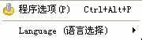

Easy CHM 界面 - 选项菜单

程序选项
:
显示
程序设置对话框
- 这里设置程序的一般选项。
Language（语言选择）
:
更改程序的界面语言 - Easy CHM支持多国语言，您可以在语言列表里选择您熟悉的语言来显示程序的界面。
注意:这里的语言设置是用来控制EASY CHM程序的界面的,并不是用来控制CHM文件的。
请参看:
CHM文件的语言设置
版权所有 © 2000-2007 国华软件 保留全部权利.